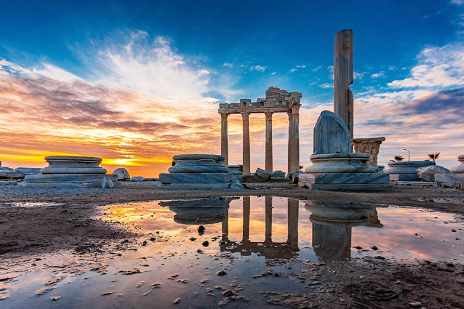
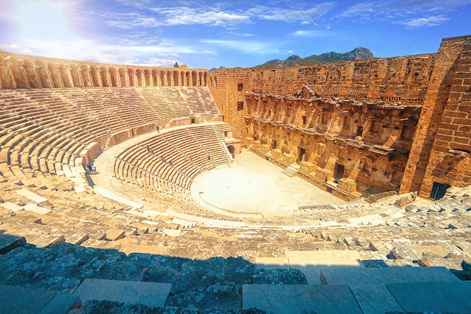
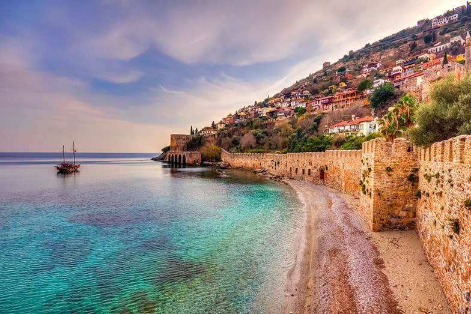
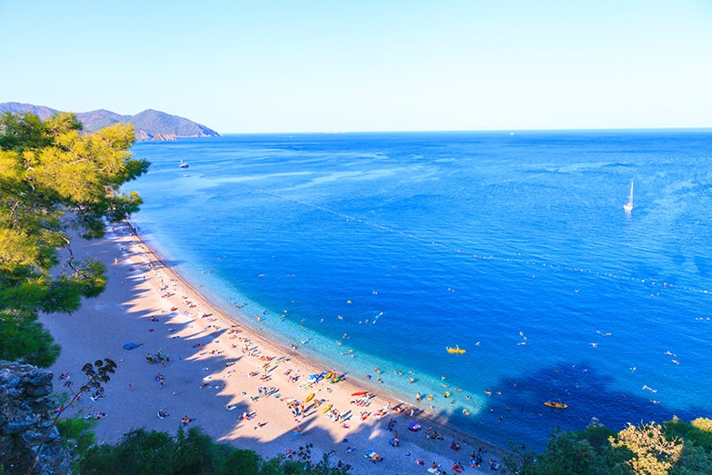
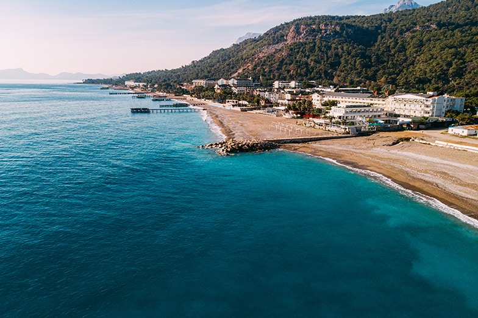

En
En  Tr
Tr انطاليا
جنة على الأرض
تبدأ أي زيارة إلى انطاليا بإدراك أنها دافئة وعطرة ، مع أزهار متفتحة ونسيم البحر المنعش.حيث تستقطب المنطقة أكبر عدد من الزوار خلال فصل الصيف ، بسبب شواطئها الواسعة. وبفضل مناخها المعتدل تضمن أن تكون أي وقت من السنة ممتعًا ، حيث توفر أشهر الربيع حرارة أقل كثافة وموسم الشتاء يوفر أمطارًا منعشة.
.
الأماكن التاريخية في انطاليا
هيَا لنبدأ بتقرير عن معالم انطاليا التاريخية المثيرة للإعجاب.
المدن القديمة في انطاليا
مسرح اسبندوس العتيق ، في منطقة سيريك في انطاليا.
تعتبر المدن القديمة الجميلة في انطاليا ذات قيمة كبيرة للخلفية التاريخية التي توفرها ، وتجربة لا ينبغي تفويتها. نظرًا لأنه من المستحيل زيارتهم جميعًا في غضون أيام قليلة ، يمكنك اختيار مسارك وفقًا لمكان إقامتك.
المدن القديمة الأكثر شهرة في انطاليا مذكورة أدناه:
مدينة سيدا القديمة
مدينة بيرج القديمة
مدينة اسبندوس القديمة
مدينة تيرميسوس القديمة
مدينة سيليون القديمة
مدينة سيلج القديمة
مدينة ليبر القديمة
مدينة فاسيليس (فاسيلس) القديمة
مدينة أوليمبوس القديمة
مدينة ليميرا القديمة
مدينة ميرا القديمة
مدينة سيمينا القديمة
مدينة ثيموسا القديمة
كاليسي
مدينة كاليسي التاريخية
تقع بلدة كاليسي القديمة المطلة على البحر في قلب مدينة انطاليا. يضم هذا الحي الجميل منازل حجرية وشوارع ضيقة وزهور استوائية وأشجار حمضيات ، كما يستضيف المقاهي الأصيلة والفنادق البوتيكية وبعض المباني الأكثر شهرة في المدينة.
مسجد يفليميناري
يقع في منطقة Kaleiçi التاريخية ، يعود تاريخ مسجد Yivliminare المصمم على الطراز السلجوقي إلى القرن الثالث عشر. يضم المجمع المسجد ومئذنته المميزة المزخرفة ، بالإضافة إلى الأضرحة ، ومدرسة ، ونزل مولوي الدراويش. إنها واحدة من مناطق الجذب السياحي الأكثر شهرة في انطاليا ، وقد تم إدراجها في القائمة المؤقتة لمواقع التراث العالمي في تركيا في عام 2016.
بوابة هادريان
تُعرف بوابة هادريان أيضًا باسم Üçkapılar ، وهي عبارة عن مبنى رائع أقامه الإمبراطور الروماني هادريانوس في عام 130 بعد الميلاد. البوابة هي المدخل الرمزي لكاليتشي وهي واحدة من أهم المعالم التاريخية المحفوظة في انطاليا. كما أن لديها تصميم معماري مذهل ، بواجهتين ذات أعمدة ، وثلاثة أقواس دخول ترتفع فوق أربعة أبراج وبرج يقف على كلا الجانبين.
المتاحف في انطاليا

مع الكثير من التاريخ ، من الطبيعي أن تمتلك انطاليا العديد من المتاحف. لأولئك الذين لديهم وقت محدود ، نقترح متحف انطاليا ، وهو أيضًا أحد أكبر وأهم المتاحف في تركيا.
متحف انطاليا
تأسس متحف انطاليا ، المعروف أيضًا باسم متحف انطاليا للآثار ، في عام 1922 على يد سليمان فكري إرتن. يضم المتحف 13 قاعة عرض ومعرضًا في الهواء الطلق ، مع مجموعات تتراوح من العصر الحجري الحديث إلى العصر العثماني. يحتوي قسم الأطفال على عروض لألعاب الأطفال على مر العصور ، ويستضيف ورش عمل وجلسات متنوعة مصممة لتحفيز اهتمام الصغار بالمتاحف والتاريخ.
جمال الطبيعة في انطاليا
حديقة كوبرولو كانيون الوطنية
يقع كوبرولو كانيون بالقرب من نهر كوبروشاي (Köprüçay) ومدينة سيلغه ( Selge Antik Kenti) ، داخل منطقة مانافغاط (Manavgat) في انطاليا ، وهو من عجائب الطبيعة الخلابة - على بعد 14 كيلومترًا ، وهو أحد أطول الأخاديد في تركيا. يمر الوادي عبر جبال طوروس ويتميز بجسرين تاريخيين ومياه جوفية وفيرة ومناظر خلابة. تشتهر بأنشطة مثل ركوب الرمث والرحلات.
شلالات انطاليا الشهيرة
تسمى انطاليا أحيانًا بـ "منطقة الشلالات". في الواقع يوجد عدد قليل من الشلالات داخل حدود المدينة: تقع شلالات يوكاري دودان (Upper Düden) و اشا دودن (Lower Düden) +على بعد حوالي ثمانية كيلومترات من وسط مدينة انطاليا. تقع شلالات كورشونلو على بعد حوالي 11 كيلومترًا من مطار انطاليا. تقع شلالات مانافغاط (Manavgat) و ساباديري (Sapadere) على مسافة أبعد من المدينة - ولكنها تستحق القيادة لرؤيتها.
كهف كارين
يعد كهف كارين أحد أكبر الكهوف الكارستية الطبيعية في تركيا. كان الكهف الذي يسكنه البشر في مرحلة ما بمثابة جسر تاريخي من العصر الحجري القديم. يقع في منطقة Yağca ، على بعد حوالي خمسة أو ستة كيلومترات من طريق انطاليا - بوردور السريع. يحتوي متحف Karain القريب على مجموعة من القطع الأثرية من الكهف.
الشواطئ في انطاليا
والآن ، دعونا نناقش الميزة الأكثر شهرة في انطاليا: شواطئها المذهلة! هذه المقاطعة الساحلية هي موطن للعديد من الشواطئ الجميلة. لقد قمنا بإدراج بعض المواقع المفضلة لدينا أدناه.
إذا كنت تقضي وقتًا في جانب كاش (Kaş) في انطاليا ، فإن شاطئ كابوتاش (Kaputaş) يقدم مزيجًا مبهجًا من البحر اللازوردي وأجواء طبيعية. يعد شاطئ كونيالتي المفعم بالحيوية بديلاً حضريًا رائعًا ويمكن الوصول إليه بسهولة - بينما يكون هذا الشاطئ العام مزدحمًا خلال أشهر الصيف ، إلا أنه عادةً ما يكون هادئًا تمامًا في الصباح الباكر. خيار جيد آخر بالقرب من وسط المدينة هو شاطئ لارا ، الذي يتميز برماله الصفراء الذهبية الناعمة. أبعد من ذلك ، تعد شواطئ أوليمبوس وأدراسان وجهات شهيرة.
المنتجات المحلية: تناول الطعام في انطاليا

سيربميه بورك (Serpme börek) ، نوع من المعجنات ، أحد الأطباق المحلية في انطاليا.
يعد تناول الطعام من أكثر الجوانب الممتعة في السفر. مطبخ انطاليا متنوع ، مع أطباق ومطاعم تروق لمجموعة من التفضيلات والأذواق. تشتهر أطباق اللحوم مثلشوب شيش (çöp şiş) ةهي قطع اللحم المشوية على أسياخ خشبية وكرات اللحم ، وكذلك المأكولات البحرية. تبرز أيضًا أطباق السلطة وزيت الزيتون الشهيرة في المنطقة. لتحفيز شهيتك ، قمنا بإدراج عدد قليل من التخصصات المحلية للمنطقة أدناه.
سلطة فول انطاليا مع الطحينة
سيربمي بوريك (نوع من المعجنات)
آيس كريم حليب محروق
هيبيش (نوع من المقبلات)
Bağaça (معجنات بنكهة السمسم والقرفة)
حلوى اليقطين
ين يمكن الإقامة في انطاليا

كمركز سياحي رئيسي ، توفر انطاليا مجموعة متنوعة من خيارات الإقامة. تتراوح عروض كل منطقة من فنادق الخمس نجوم والبوتيك إلى المعاشات والنزل. مع مساعدك الشخصي ، يمكنك اختيار أفضل باقة لدى worldzeta لسكنك وعلاجك.
-
 عملية تكبير الثدي في تركيا
2021-10-17
عملية تكبير الثدي في تركيا
2021-10-17
-
 أسعار علاج الأسنان في تركيا
2021-04-14
أسعار علاج الأسنان في تركيا
2021-04-14
- ما هو طب الغدد الصماء؟ 2018-03-07
 Implant Treatment
Implant Treatment
“Excellent personal care and fabulous patient experience, I felt very well looked after, and I felt confident that they wanted the best outcome for me. I was nervous about aspects of the surgery, and it took time to reassure me.”
 WhatSapp دردشة ...
WhatSapp دردشة ...